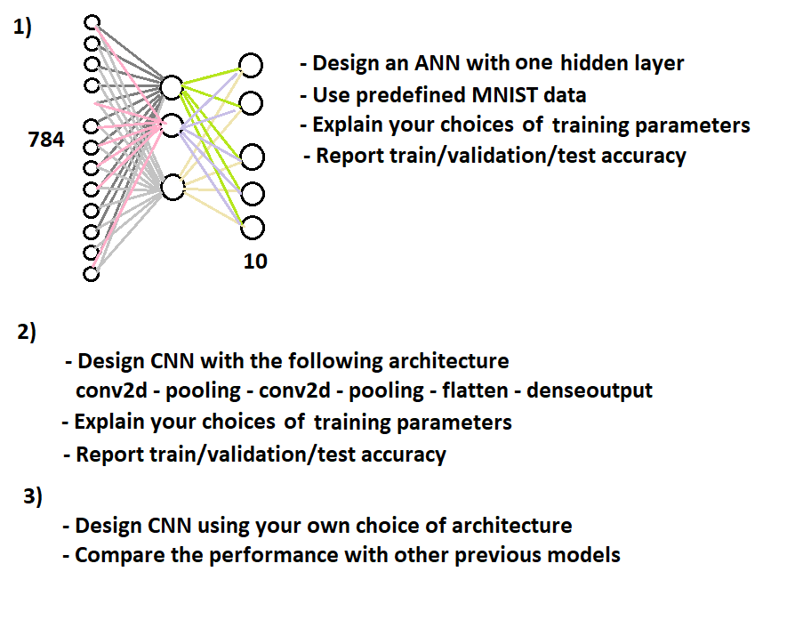

Build your solution from the provided code
Discuss the following information of your MNIST Classifier
- Discuss the network design
- Discuss the selection of network parameters for training e.g., optimizer, loss, etc.
- Report the accuracy of the training/validation and testing process.
- Provide critical discussion on results comparison among different models and parameters
(open
questions)
